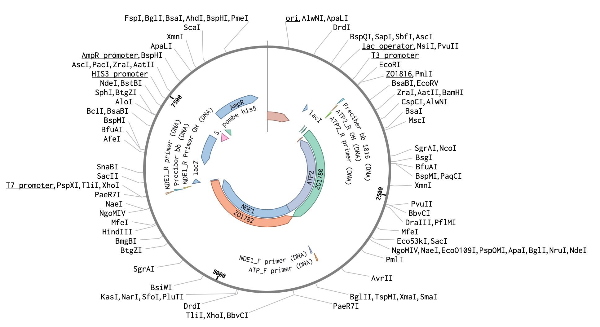
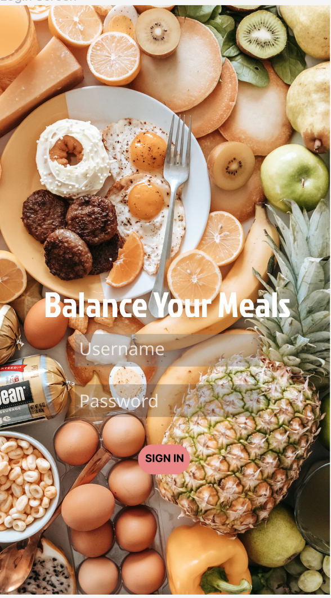

I am currently a student researcher in the Zid Lab at UCSD, studying gene expression.
As part of the project I am working on, I am creating a plasmid construct with a certain promoter of interest and a protein coding region of another gene. I am using the reporters with genes of interest to determine whether they are working as they should be so they can later be used along with a guide RNA to turn off other genes and then observe any changes in gene expression. In order to create my plasmid constructs, I take plasmids and amplify the region of the plasmids that I want using Polymerase Chain Reaction. I later combine the fragments I cut out from the plasmids and assemble them using Gibson Assembly, which takes around 3 hours. I then plate the product from my Gibson Assembly and check if my desired plasmid has been formed by cutting the plasmids with restriction enzymes and checking it on a gel.
My schedule
For this project, I created a table on HTML in which I include my daily activities/tasks. I first drew a sketch of my table including how many rows and columns I wanted. I then wrote the code for each row and column in HTML and included associated images and links for my activities. I also used CSS for this project in order to change the colors of column/row headings and also the color for the links.
Balance Your Meals
I also created a hypothetical app called Balance Your Meals which helps users track the amount of calories they consume. In order to complete this project, I followed tutorial videos and created different frames in order to get a text box inside of an image and also inserted different images onto each page of the app. I also used different tools on Figma to create a heart for the bottom of my app's screen. Lastly, under the prototype function, I created arrows and made them go from one portion of a page to a different section of a different page so it works like any other app that we use.